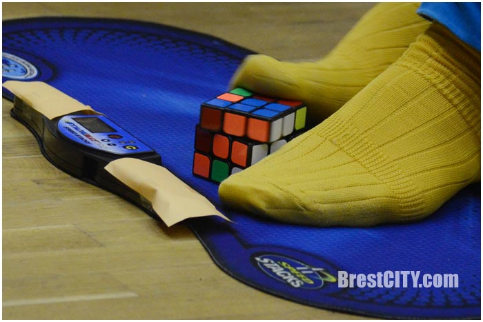

Самые нестандартные виды сборок
Как я уже сказал есть Многие другие виды в сборках
Но расскажу про самые популярные

Сборка закрытыми глазами
Сначала человек смотрит на куб, после чего ему закрывают глаза.
Не очень легко запомнить где какой цвет, а еще сложнее не ошибиться.
Сборка закрытыми глазами при помощи партнера
Может показаться, что это тоже самое, но здесь немного по-другому.
Кубик разбирают и человек, который собирает не смотрит на куб.
В этом случае ему помогает партнер.


Сборка под водой на одном вдохе
Под водой складывать кубик гораздо сложнее.
Происходит это так: Человек смотрит на скрамбл, а уже после этого идет в такой якобы "Аквариум"
Не дышать пока не соберешь куб довольно трудно, поэтому не рекомендую повторять это.
Сборка Одной рукой
Действительно это не так трудно как собирать под водой, но постараться тоже надо.
Начало такое же как и при сборке в 2-ве руки, а уже после этого нужно собирать одной рукой.
Мировой рекорд почти вдвое больше за стандартный,а именно 6,88

